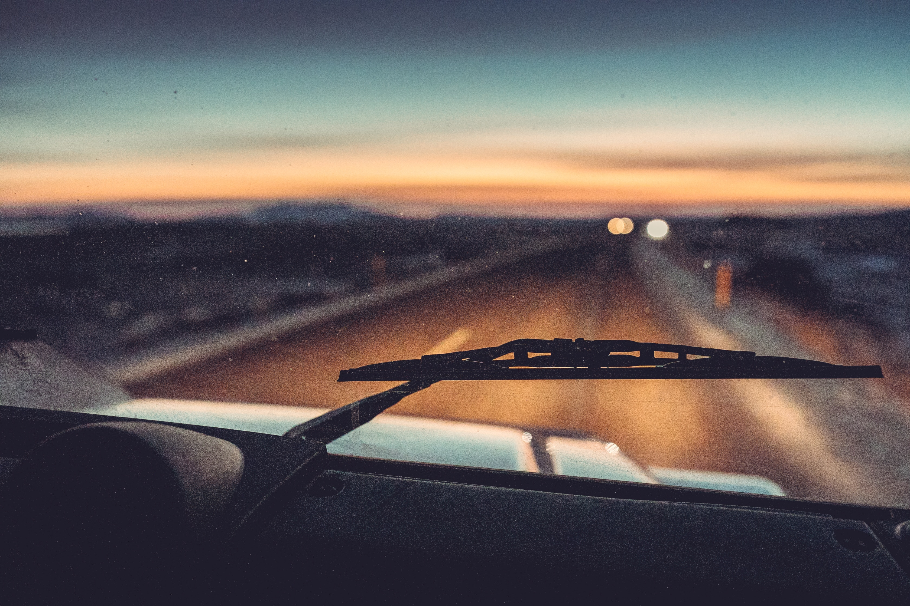
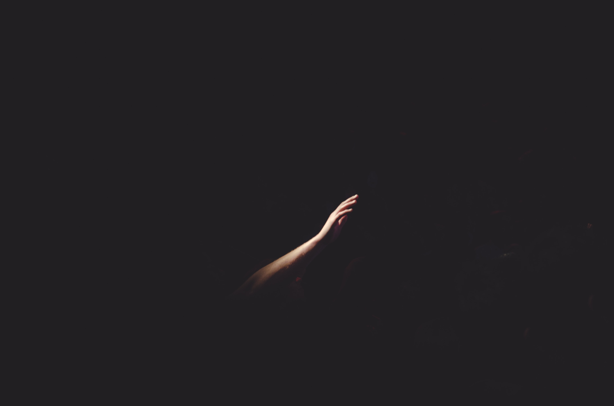

Cíl života

Život je jako jízda v autě. Čím rychleji se jede, tím rozmazanější je okolí. A rychlost je, oč dnes běží. Cenu dostane jen první, nejlepší, nejsilnější, nej… Plyn až na podlahu. Klidně se tak může stát, že jedeme tak rychle, že ani nevíme, kde jsme a jak jsme se sem dostali. Ve zpětném zrcátku jen prach. Před námi cesta.
 Hugo Ramos
Jen málokdy se zamyslíme, kam vlastně tak spěcháme. Co je cílem té cesty. A hlavně, má vůbec cenu? Mnohdy k tomu člověka přivede až vnější impuls. Náraz, který ho donutí zastavit, vyskočit z toho šíleného tempa a rozhlédnout se. Zjistit, že mu život utekl jako písek mezi prsty.
Dlouhou dobu jsem si myslel, že cílem života je být šťastný. Ať už to znamená cokoliv. To je ten důvod, proč jsme schopni přečkat všechny těžkosti a bolest. Proč ráno vstáváme a jdeme do práce, která nás nebaví a dřeme, abychom udělali dojem na někoho, koho nemáme rádi. Proč si kupujeme věci, které nepotřebujeme…
Ještě donedávna bych tak řekl, že cílem života je, abych ho prožil šťastný. Nakupoval jsem a doufal, že mě to udělá šťastným. Vyrazil jsem si a doufal, že budu šťastný. Našel jsem si dobře placenou brigádu a myslel si, že budu šťastný. Stejně ale vždy přišel ten moment, kdy jsem ležel v posteli a přemýšlel. Co dál? Budu se takhle honit za štěstím donekonečna? Pokud by mělo “štěstí” být tím vysněným cílem života, jak ho dosáhnu? Kdy si můžu říct - “Ok, dosáhl jsem úplného štěstí.”?
Život není naštěstí jenom růžový. Štěstí je jen prchlavý pocit. Dobré okamžiky střídají období těch špatných. Jen díky tomu si ty dobré užijeme a oceníme je. Štěstí nemůže být cíl, protože ho nelze dosáhnout. Když už si myslíme, že ho pevně držíme, uteče nám. Marné pronásledování by přineslo pravý opak štěstí.
 Cherry Laithang
Místo toho jsem se zaměřil na to, aby můj život měl cenu. Aby po mě něco zůstalo. Snažím se dělat to, co mohu ovlivnit a čeho můžu dosáhnout. Vstávat s pocitem, že “měním svět”. Být užitečný. Nemusí přitom jít o nic složitého.
- Chovat se k ostatním slušně a mile.
- Podat pomocnou ruku člověku, který o to nepožádal.
- Vytvořit něco, co mohou ostatní, nebo jen já používat.
Stačí maličkosti, které utvoří celkovou mozaiku dobře prožitého života. Poslední, čeho bych chtěl dosáhnout je, abych si na smrtelné posteli uvědomil, že není jediný důkaz toho, že jsem tu kdy žil.
Když budeme dělat to, v co věříme a co nám dává smysl, štěstí přijde samo.
Autor úvodní fotky: Hamish Clark